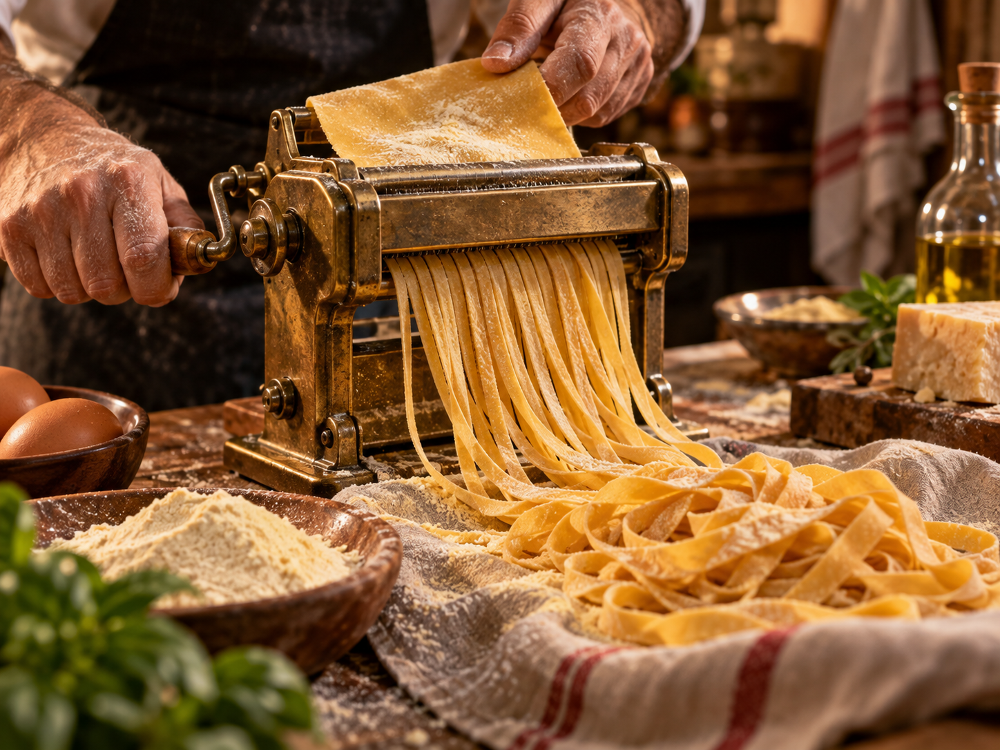
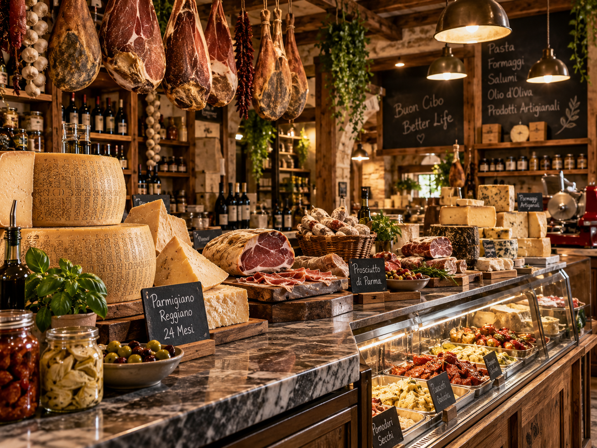

Crafted by Hand.
Served at Our Counter.
Step into our interactive pasta bar. Watch golden egg yolk dough rolled across wood, cut fresh to order, and paired with house-simmered passatas and vintage Italian wines.

Choose Your Shape
Select a handcrafted pasta shape to explore its culinary story and recommended sauce pairings.
Tagliatelle
Hand-rolled and cut into silky, golden ribbons. Made with 100% durum wheat semolina and rich egg yolks for a porous texture that holds rich sauces.
Slow-cooked wild boar ragù, traditional Bolognese, or rich creamy mushroom reductions.

From Pasta to Plate
Four harmonious steps that transform raw ingredients into an authentic Italian dining experience.
FRESH PASTA
Hand-kneaded dough cut into classic shapes daily.
HOUSE SAUCE
San Marzano tomatoes simmered with fresh basil and garlic.
DELI FINISHES
Aged Parmigiano-Reggiano and cold-pressed extra virgin olive oil.
YOUR TABLE
Meant to be shared slowly with family and warm company.

Take the Taste of the Atelier Home
Discover fresh pasta, house-prepared sauces, imported cheeses, marinated olives, and specialty Italian pantry staples prepared for easy dining at home.
TODAY'S COUNTER SELECTION
- Fresh Tagliatelle & Pappardelle Fresh Daily
- Slow-Simmered Tomato Sugo (500ml) House Sauce
- 24-Month Aged Parmigiano-Reggiano Imported Cheese
- Marinated Artichokes & Castelvetrano Olives Antipasti
Loved by Fresh Pasta Enthusiasts
Read stories from local home chefs, neighborhood food lovers, and families who enjoy our daily fresh cuts.
"Picking up fresh tagliatelle and house tomato sugo on my way home from work has completely transformed our weeknight dinners. Tastes like a 5-star trattoria in minutes."
"The 24-month Parmigiano-Reggiano and house-prepared wild boar ragù are unmatched. Pasta Forma is hands down the finest artisan Italian deli in the city."
"Their lemon ricotta ravioli with sage brown butter was the star of our Sunday family dinner. You can truly taste the craftsmanship in every single bite."